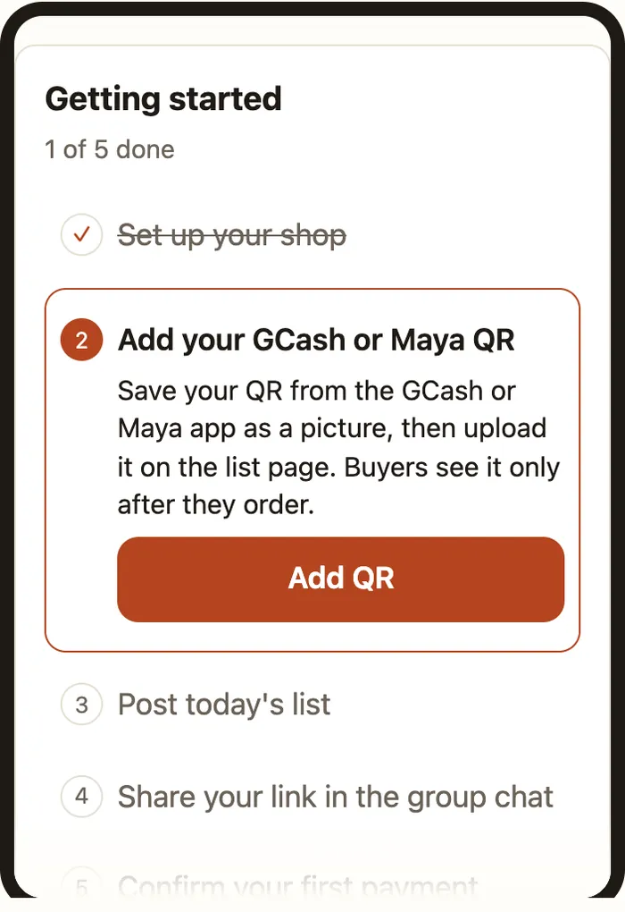
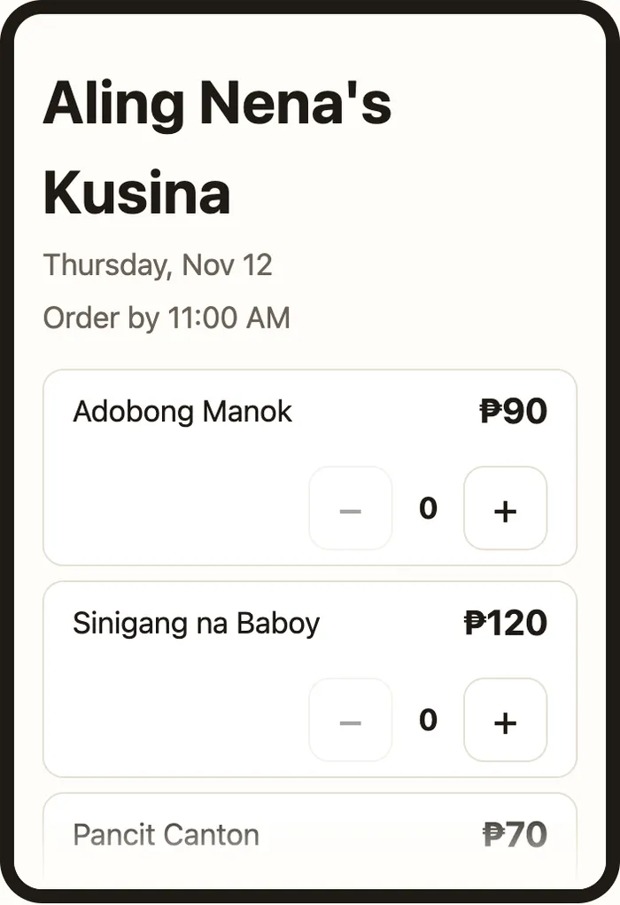
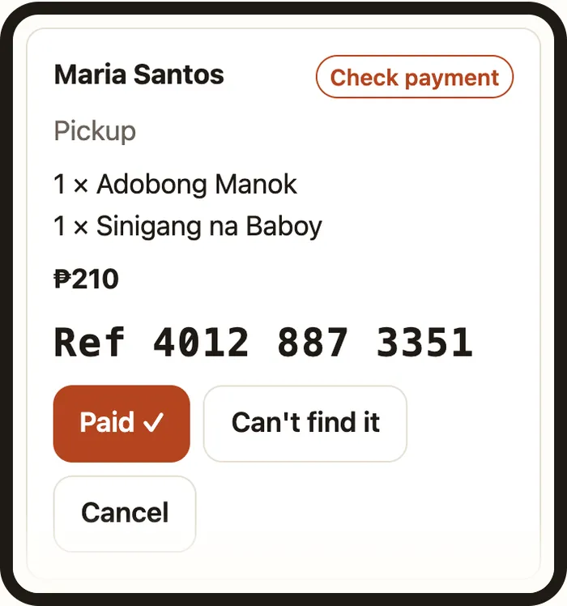
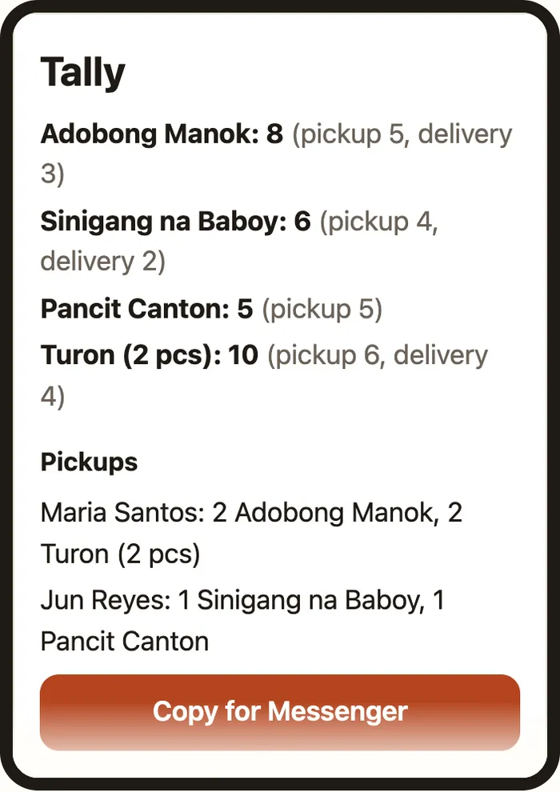

1. Sign in and set up your shop
- Sign in with Google or with a 6-digit code sent to your email.
- Pick your shop name and your shop link, for example
tinda.calmdownoscar.com/aling-nena. Your shop link can’t be changed later. - Add how buyers can reach you: a Messenger link or your mobile number. This is optional.

2. Add your payment QR
- Save your GCash or Maya QR from the app as a picture, then upload it on the list page.
- Buyers see your QR only after they reserve an order.
- To change it, upload a new one. It replaces the old one.
3. Post today’s list
- Paste the list you’d normally post in the group chat. Tinda reads the items and prices. Check them, fix anything it got wrong, and set how many of each you have (optional).
- Set the time orders close.
- Tap Publish. Your list is live.
- Tomorrow, tap Copy yesterday’s list on your home page and change only what’s different.

5. Confirm payments
- When a buyer orders, their items are held for them for a short time while they pay you.
- After paying, the buyer enters their GCash or Maya reference number. Open Orders, check your GCash or Maya app for that payment, then tap Paid ✓.
- If you can’t find the payment, tap Can’t find it. The buyer can check the number and enter it again, up to 3 tries in all.
- Tapped Paid ✓ by mistake? Tap Undo within 10 minutes.
- If no reference comes in on time, the order ends by itself and the items go back on the list.

6. Orders from chat or in person
- On Orders, add an order yourself for anyone who messaged you instead of using the link. It counts toward your stock and your tally the same way.
7. See what to prepare
- Tally shows how many of each item to prepare, split into pickups and deliveries.

8. Your free trial
- Your first 14 days are free. After that, Tinda is ₱59 a month or ₱590 a year (2 months free). To pay, open Plan and payment on your shop page, pay our QR with GCash or Maya, and type the reference number. We check it, usually within a day. Nothing renews by itself: to stop, just don’t pay again. If you change your mind, ask within 7 days of paying and we’ll refund you in full.
Install Tinda on your phone
- Android (Chrome): open your seller home, tap the ⋮ menu, then Add to Home screen.
- iPhone (Safari): open your seller home, tap Share, then Add to Home Screen.
Questions? See the FAQ.